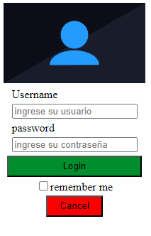
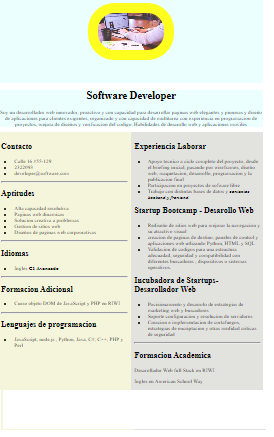
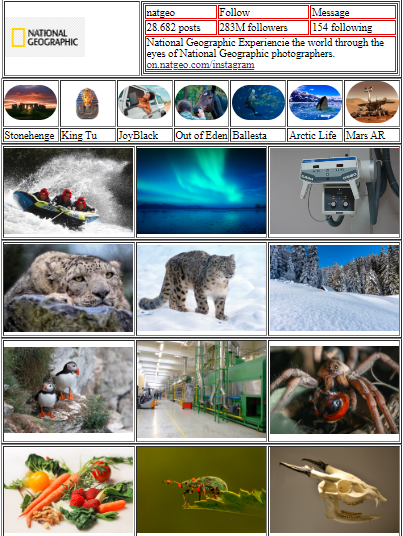

|  |  |  |
| Este ejercicio es para el inicio de seccion | En este ejercicio es para crear hojas de vidas utlizando html y css | En este un copia del dieño del instagram de natgeo |
| Esta es la pagina del filtro HTML y CSS | Datos a traves de form y mostar por pantalla | ssiguiente proyecto |